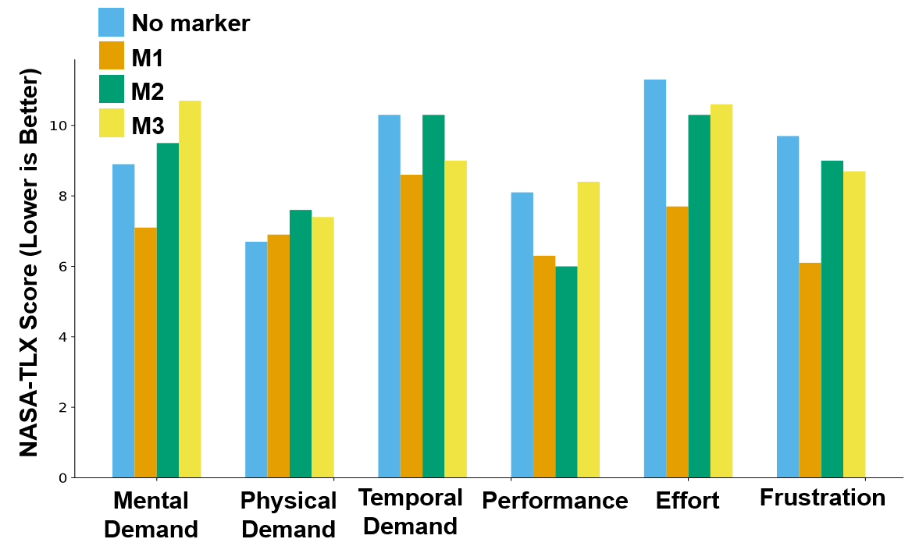

Project Demo Video
Project Description
Kidney stone cases in the U.S. have significantly increased, and nearly a quarter of removal procedures require repeat operations because stones are often missed. Improving surgical training could reduce these repeat procedures, but real intraoperative training opportunities are limited.
This project explores how augmented reality (AR) can support surgical training by projecting an expert surgeon’s eye gaze into a trainee’s head-mounted display. Using three different AR gaze marker designs, eight surgical trainees performed a simulated ureteroscopy task on realistic kidney phantoms while guided by an expert. Performance measures, including stones found, task time, and gaze metrics, were collected along with subjective workload ratings (NASA-TLX).
Results show that while some AR markers increased perceived mental effort, they also boosted engagement and improved task performance. Gaze analysis further revealed that marker design affects cognitive load. Overall, the study demonstrates the potential of AR gaze based guidance to enhance surgical training effectiveness.
Eye Gaze Marker Co-Design
The three AR gaze markers were developed following design guidelines derived from a prior semi-structured co-design study. Each marker was designed to support clear visual communication between the expert and trainee while minimizing cognitive load. The designs aimed to reflect variations in visual salience and movement characteristics that align with surgical attention cues.


System Workflow
A real-time AR application was created to share an expert surgeon’s eye gaze with trainees using HoloLens 2 devices. Built in Unity with MRTK2 and Photon Unity Networking (PUN), the system captured expert gaze using the headset’s sensors, following a calibration procedure for accuracy.
During each study, the expert and trainee stood side by side facing a surgical monitor tracked with four ArUco markers. These markers provided the monitor’s dimensions and position, enabling precise alignment of the virtual display. The expert’s gaze data and coordinate transformations were streamed through PUN so the trainee saw the expert’s gaze projected correctly on their own virtual screen, regardless of viewing angle. A remote interface was used to control the display of visual markers during the study.

User Study
The study included one expert surgeon and eight surgical trainees. In each trial, the trainee used a LithoVue ureteroscope to navigate a kidney phantom while guided by the expert. Trainees were asked to explore the kidney and report how many stones they found. Each phantom contained five stones, though participants were not informed of the true number.
Each trainee completed four trials: one using each of the three AR gaze marker designs and one control trial with no marker. In the no-marker condition, the expert provided only verbal guidance, reflecting standard practice. In the marker conditions, trainees received both verbal and visual guidance through the HoloLens 2. To reduce learning effects, the order of markers and the kidney phantoms was randomized across participants.


Results and Evaluation
Task performance and workload were measured using objective metrics and NASA-TLX ratings. Overall, AR gaze markers improved fixation on relevant areas, increased stone detection rates, enhanced gaze behavior, and reduced physical demand compared to the no-marker condition.
The M1 marker produced the lowest mental demand, temporal demand, effort, and frustration, indicating reduced cognitive load. However, it was associated with a larger gaze distance traveled, suggesting more extensive visual scanning.
The M2 yielded the highest self-rated performance but also increased perceived effort and frustration, reflecting deeper task engagement. Its lower fixation-to-saccade ratio suggested reduced cognitive load during scanning.
The M3 resulted in poorer performance, including the lowest stone detection rate and higher mental demand and effort, indicating that its visual design may have introduced unnecessary cognitive burden.


Conclusion
This work evaluated the impact of three gaze markers in an AR gaze-based training system. Each trainee performed ureteroscopy on four phantoms, guided by verbal feedback or by a combination of verbal and visual feedback. Task performance, gaze metrics, and perceived workload were recorded. The results indicated that appropriately designed gaze markers can reduce cognitive load and enhance task engagement. The study underscores the importance of surgeon-centered AR design in advancing surgical training and education.
Check out the project on GitHub.